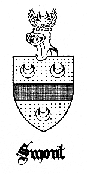

*
THE SMOOTS OF MARYLAND AND VIRGINIA
*
This edition is limited to 250 copies
Your book is numbered
*

*
THE SMOOTS OF MARYLAND
AND VIRGINIA
A genealogical history of William Smute,
Boatright, of Hampton, Virginia, and
Pickawaxon, Maryland, with a history of
his descendants to the present generation
by
HARRY WRIGHT NEWMAN
WASHINGTON, D. C.
1936
*
Harry Wright Newman
has also published
Anne Arundel Gentry
|
vii
FOREWORD
THESE chronicles relating to William Smute and his descendants
were actually begun in the winter of 1922, when, as an idle and
recently university graduate, waiting to be placed as a wage earner
in the economic world, I occupied my leisure moments in seeking
knowledge of my forbears and to prove the tradition that had been
handed down from my elders. And during these fourteen years many
hours were spent in untiring research into musty, dusty, and ancient
as well as sometimes carelessly kept court records at more than fifty
county court houses, besides many additional hours were spent at home
in the attempt to untie numerous knots and to establish the parents
of many-a-fatherless Smoot.
The loss of the three early registers of the Episcopal Parishes in
Charles County has not made it one of the most simple counties in
which to work--besides, many deed books and the administration accounts
for several years are missing. The records of Trinity Parish have been
preserved since its establishment in 1750, though they contain only meager
Smoot data. Furthermore, the complete destruction of all deeds in St. Mary’s
County, and no administration accounts prior to 1806 made it most difficult
in straightening out the entanglements of the Smoots in that county.
It is regretted that the numerous personal letters which were sent to the
representative descendants, now scattered throughout the States and the
Territory of Hawaii, remained unanswered, but I wish to acknowledge with
sincerity my appreciation of the few who responded and manifested interest
in my undertaking. Space does not allow the mentioning of all, but I do wish
to express my thanks to Mr. Harvey Clinton Smoot, of Prescott, Arizona, Miss
Annibel Stine, of Tuscumbia, Alabama, Dr. James Edward Smoot, of Concord,
North Carolina, and Mr. Archibald F. Bennett, secretary of the Genealogical
Society of Utah, to whom I am indebted for the descendants of Abraham Owen
Smoot, the Mormon leader.
And I am also particularly grateful for the aid of Mrs. Mary Turpin Layton--a
granddaughter of Mary Adeline (Smoot) Turpin--a charter member of the Irving
Wells Chapter, D. A. R., of Quantico, Virginia, one of the organizers of the
Nanticoke Chapter, D. A. R., of Hurlock, Maryland, a member of the Daughters
of the Barons of Runnemede, and an outstanding authority on the old families
of the lower section of the Eastern Shore.
|
viii
I furthermore wish to extend my gratitude for the many courtesies afforded me
by the staff of the North Carolina Historical Commission during my stay in
Raleigh. Their graciousness and old-world charm of manner contrasted most
favorably with my reception at the Archives Division of the Virginia State Library.
Owing to inhospitableness, lack of understanding, and the negative attitude of that
office, I was forced to curtail the work planned there, and was prevented perhaps
from the obtainment of many additional facts on the Virginia branches.
Finally, no genealogist, amateur nor professional, is infallible and if I have
erred in any statement, I shall be glad to have it brought to my attention with
sufficient evidence to show that wrong conclusions have been drawn.
And it is with pleasure that I present these findings to the descendants of the
distinctive family of Smoot, this first day of July, one thousand nine hundred
and thirty-six.
HARRY WRIGHT NEWMAN
The Presidential
Washington, D. C.
|
CONTENTS
Introduction . . . XIII
William Smute . . .1
Richard Smoot2 and His Descendants . . . 7
Thomas Smoot, Gent.2 . . . 50
Captain Thomas Smoot, Gent.3 . . . 54
Captain Barton Smoot4 and His Descendants . . . 56
Thomas Smoot4 and His Descendants . . . 82
Charles Smoot4 and His Descendants . . . 106
William Smoot4 and His Descendants . . . 123
Edward Smoot3 and His Descendants . . . 129
William Smoot, Gent. 3 and His Descendants . . . 132
George Smoot5 . . . 141
Cuthbert Smoot5 . . . 149
Caleb Smoot5 . . . 151
William Smoot5 . . . 152
Alexander Smoot5 . . . 163
Abraham Owen Smoot7 . . . 172
Miscellaneous . . . 185
Military and Naval Services . . . 196
|
xii

|
xiii
INTRODUCTION
PRIOR to the thirteenth century there lived upon his feudal estates
near the town of ‘S Gravenhage in the Province of Zuid Holland a vassal
of the Count of Holland who, when family names were being adopted by
the civilized States of Western Europe, assumed the cognomen of “Smout.”
Why this name became attached to him and his family is a matter of conjecture,
smout in the Netherland language signifies the inelegant but highly necessary
food product “lard” or more literally, “grease.”
Time passed. The sons of this Dutch vassal gradually amassed wealth and as
their enterprises or estates offered an important source of revenue for the
Counts of Holland and Zeeland--for about this time the two counties had been
united under one head--they assumed a more prominent position in the realm.
Their sons in turn relinquished the industry of their immediate ancestor and
devoted themselves to public service and combat during which time one
distinguished himself sufficiently to be granted by the reigning Count of
Holland the privilege of using arms. At first the emblem was a plain black
crescent painted on the metal shield of the senior member of the household,
but gradually the emblem became more complex as the institution of heraldry
advanced.
The crescent thus became the symbolic emblem of the House of Smout and thus
served as the basis for the later and more modified coat-of-arms in which the
background of the shield remained gold with three black crescents.
Years passed. Some descendants of the Squire of ‘S Gravenhage succeeded in life,
many fell in battle, others became enriched from industry and commerce which
were remarkably great in the fourteenth and fifteenth centuries among the cities
of Holland and Flanders. Through their wealth and position the gentlemen of the
House of Smout intermarried with noble and gentry houses of the Province, and
thus attained greater importance and prestige among the subjects of the
Netherland Kingdom.
At the beginning of the fifteenth century one member of the House of Smout had
allied himself in marriage with several gentry houses of his State and had
established his seat at Rotterdam, also in the Province of Zuid Holland.
About this time, for it was not until the fourteenth century that the practice
of quartering arms became common among the nobility, this member of the Smout
family was granted permission to bear the emblems of his maternal ancestry.
Thus, we have the Smouts
|
xiv
of Rotterdam, with the unicorn, shells, and bars, but still retaining the
identity of the original symbols of his paternal line in the first quarter
of his arms.
From this point to the time that William Smout or Smute, the pioneer settler
in America, was established at London in the seventeenth century, the history
of his immediate forbears is somewhat hazy and confused. Inasmuch as we have
not proved the parents of the American emigrant, one can only assume that he
was one of the younger sons of a noble house and for that reason he became a
constructor of watercrafts. But one can not dispute the facts that William
Smute, of Pickawaxon, Maryland, had the name and all the tradition of the Dutch
House of Smout. It has been handed down from pre-Revolutionary members of the
family, that the Smoots of Maryland bore a coat-of-arms and that “there was a
reindeer on it.” (No doubt the unicorn).
The Dutch origin of the family has been traditional in several branches of
the family in America, but before passing one must not overlook the Scotch
legend of the Smoot branch of Dorchester County, perhaps the most affluent
and cultured branch of the Smoot family of the early post-Revolutionary era.
It is believed, however, that this tradition became confused with the undisputed
Scotch lineage of their Douglas ancestry which married with this branch in both
Charles and Dorchester Counties and which can claim direct descent from Scotch
nobility and connection with the Royal House of Stuart. Then it is possible that
the emigrant, before sailing for Virginia, tarried for a while in the land
beyond the Cheviot Hills and had married a Scotch lass.
Like most early colonial families, the name was spelled in several different
forms on the early records--the most common and earliest was “Smute,” but
other variations found were Smut, Smot, Smoote, Smouth, and finally Smoot,
but some who migrated South used Smoote as late as the War between the States.
A tradition which proves a myth, the origin of which is veiled in mystery,
is that three Smoot brothers while serving in the British Army during the
Revolutionary War deserted, joined the Continental forces, and remained in
America. At the first Federal census of 1790, members of this family were
found only in the Southern States of Maryland, Virginia, and North Carolina,
all of whom are proved descendants of the Maryland pioneer. The name Smoot
is therefore distinctly Maryland as Cabot is of Massachusetts and
Spottiswood of Virginia.
More than three hundred counties of the 1850 census were searched in the
preparation of these chronicles, and it was a few days before the
|
xv
submission of the manuscript to the printer that a Smoot was found to be
born outside of the United States. It was John Smoot (spelled exactly like
that of the Maryland family) a stevedore of Mobile, Alabama, who claimed
Germany as his birthplace. This fact is rather significant as it adds another
convincing threat to the Continental origin of the Maryland family.
The only early family which could possibly be confused with the descendants
of William Smute is the German family of Smootz which settled in Pennsylvania.
Prior to the Revolution Abraham Smootz, a member of this family, was an early
settler in the Valley of Virginia. Later the s was substituted for the z, and
the city directories today show members of this family scattered throughout the
States. Yet, it is possible that some branches of this family have actually
dropped the s and thus spell their name like that of the pioneer family of
Maryland.
The London and Edinburgh city directories today, both towns containing the
greatest assortment and representation of individual names in their respective
kingdoms, do not list a single resident by the name of Smoot. Perhaps, it is
safe to state that the family is practically unknown in Great Britain today.
|
{kind=link}